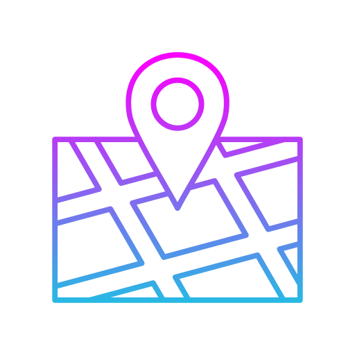
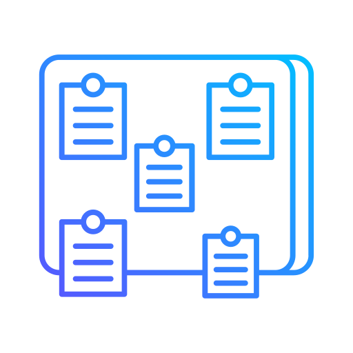
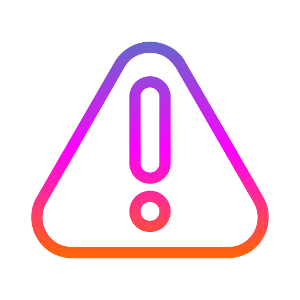

Congregación Diaz Mirón
Infomación de la congregación Diaz Mirón
Reunión de fin de semana
Programa y acomodadores.
Reunión entre semana
Programa y acoomodadores.

Territorio
Mapas Díaz Mirón.

Tablero de anuncios
Próximos eventos.

NO TOCAR
Direcciones del Territorio.
Reunión de fin de semana
Programa por mes
| Mes | Día | Presidente | Lector | Oración | Hospitalidad |
|---|---|---|---|---|---|
| Octubre | 5 | Ricardo Cholico | Said Montaño | Saúl Jiménez | G.2 |
| Octubre | 12 | Andrey Durán | Rosendo Cholico | Rogelio García | G.3 |
| Octubre | 19 | Esteban Fernández | Rogelio García | Andrey Durán | G.4 |
| Octubre | 26 | Rogelio García | Pedro Jiménez | Ricardo Cholico | G.1 |
| Noviembre | 2 | ASAMBLEA DE CIRCUITO | |||
| Noviembre | 9 | Rosendo Cholico | — | Esteban Fernández | G.2 |
| Noviembre | 16 | Pedro Jiménez | Andrey Durán | Pedro Jiménez | G.3 |
| Noviembre | 23 | Saúl Montaño | Marco A. Martínez | Saúl Montaño | — |
| Noviembre | 30 | José A. Hernández | Luis Téllez | Rosendo Cholico | G.4 |
| Diciembre | 6 | Ricardo Cholico | Eduardo Barrios | Andrey Durán | G.1 |
| Diciembre | 13 | Andrey Durán | Arturo Alvarado | Saúl Jiménez | G.2 |
| Diciembre | 20 | Esteban Fernández | Ricardo Cholico | Rogelio García | G.3 |
| Diciembre | 27 | Rogelio García | Said Montaño | Ricardo Cholico | G.4 |
Acomodadores — Sábados
| Mes | Fecha | Entrada | Auditorio | Extra |
|---|---|---|---|---|
| Octubre | Sábado 4 | Rogelio García | Marco A. Martínez | Said Montaño |
| Octubre | Sábado 11 | Pedro Jiménez | Jorge Vergara | Andrey Durán |
| Octubre | Sábado 18 | Rosendo Cholico | Eduardo Barrios | Esteban Fernández |
| Octubre | Sábado 25 | Esteban Fernández | Luis Téllez | — |
| Noviembre | Sábado 8 | Ricardo Cholico | Pedro Jiménez | Marco A. Martínez |
| Noviembre | Sábado 15 | Andrey Durán | Emiliano Sanchez | Rogelio García |
| Noviembre | Sábado 22 | Said Montaño | Andrey Durán | Marco A. Martínez |
| Noviembre | Sábado 29 | Esteban Fernández | Angel Sanchez | Luis Téllez |
Reunión entre semana
16 de Octubre — Presidente: Rogelio García — Canción 39 · Eclesiastés 7, 8
| Tesoros de la Biblia | Asignado | Ayudante | Notas |
|---|---|---|---|
| Vayamos “a la casa donde hay duelo” (10 min.) | Ricardo Cholico | — | Auditorio Principal |
| Busquemos perlas escondidas (10 min.) | Andrey Durán | — | Auditorio Principal |
| Lectura de la Biblia (4 min) Ec 8:1-13 | Ángel Sánchez | — | Auditorio Principal |
| Seamos mejores maestros | Estudiante | Ayudante | Notas |
|---|---|---|---|
| Empiece conversaciones (2 min.) | Roma Alvarado | Piedad Molina | — |
| Empiece conversaciones (2 min.) | Deyannia España | Jael Vásquez | — |
| Haga revisitas (3 min.) | Iliana de Montaño | Karen Franco | — |
| Explique sus creencias (5 min.) | Epifania García | Verónica de Andrade | — |
| Nuestra vida cristiana | Asignado | Ayudante | Notas |
|---|---|---|---|
| Canción 151 | — | — | — |
| Fortalezca su fe en la resurrección (15 min.) | Esteban Fernández | — | — |
| Estudio bíblico de la congregación (30 min.) | Pedro Jiménez | — | — |
| Canción 124 · Palabras de conclusión (3 min.) · Oración: Pedro Jiménez · Lector: Marco Martínez | — | — | — |
23 de Octubre — Presidente: Andrey Durán — Canción 30 · Eclesiastés 9, 10
| Tesoros de la Biblia | Asignado | Ayudante | Notas |
|---|---|---|---|
| Tengamos un punto de vista equilibrado (10 min.) | Esteban Fernández | — | Auditorio Principal |
| Busquemos perlas escondidas (10 min.) | Ricardo Cholico | — | Auditorio Principal |
| Lectura de la Biblia (4 min) Ec 10:1-20 | Arturo Alvarado | — | Auditorio Principal |
| Seamos mejores maestros | Estudiante | Ayudante | Notas |
|---|---|---|---|
| Empiece conversaciones (3 min.) | Rocío Rivas | Ana Alemán | — |
| Empiece conversaciones (4 min.) | José A. Hernández | Ricardo Cholico | — |
| Haga discípulos (5 min.) | Karla Téllez | Valeria Almreaya | — |
| Nuestra vida cristiana | Asignado | Ayudante | Notas |
|---|---|---|---|
| Canción 47 | — | — | — |
| Jehová nos da estabilidad… (15 min.) | Rogelio García | — | — |
| Estudio bíblico de la congregación (30 min.) | Ricardo Cholico | — | — |
| Canción 28 · Palabras de conclusión (3 min.) · Oración final: Saúl Jiménez · Lector: Jorge Vergara | — | — | — |
30 de Octubre — Presidente: Pedro Jiménez — Canción 155 · Eclesiastés 11, 12
| Tesoros de la Biblia | Asignado | Ayudante | Notas |
|---|---|---|---|
| Disfrute de una vida feliz y saludable (10 min.) | Rogelio García | — | Auditorio Principal |
| Busquemos perlas escondidas (10 min.) | Esteban Fernández | — | Auditorio Principal |
| Lectura de la Biblia (4 min) Ec 12:1-14 | Daniel Segura | — | Auditorio Principal |
| Seamos mejores maestros | Estudiante | Ayudante | Notas |
|---|---|---|---|
| Haga revisitas (3 min.) | Jazmín Pérez | Josefina Trujillo | — |
| Haga revisitas (4 min.) | Rosalinda Martínez | Hermelinda Aguilar | — |
| Discurso (5 min.) | Florentino Tonches | — | — |
| Nuestra vida cristiana | Asignado | Ayudante | Notas |
|---|---|---|---|
| Canción 111 | — | — | — |
| Necesidades de la congregación (15 min.) | Pedro Jiménez | — | — |
| Estudio bíblico de la congregación (30 min.) | Ricardo Cholico | — | — |
| Canción 8 · Palabras de conclusión (3 min.) · Oración: Ricardo Cholico | — | — | — |
Acomodadores — Jueves
| Octubre | |||
|---|---|---|---|
| Fecha | Entrada | Auditorio | Extra |
| Jueves 2 | Esteban Fernández | Rogelio García | Eduardo Barrios |
| Jueves 9 | Ricardo Cholico | Angel Sanchez | Jose A. Hernández |
| Jueves 16 | Andrey Durán | Jose A. Hernández | Jordy Vielma |
| Jueves 23 | Said Montaño | Arturo Alvarado | Marco A. Martínez |
| Jueves 30 | Saul Jiménez | Rogelio García | Gabino Rivas |
| Noviembre | |||
|---|---|---|---|
| Fecha | Entrada | Auditorio | Extra |
| Sábado 2 | ASAMBLEA DE CIRCUITO | ||
| Jueves 6 | Rogelio García | Esteban Fernández | Said Montaño |
| Jueves 13 | Pedro Jiménez | Eduardo Barrios | Luis Tellez |
| Jueves 20 | Rosendo Cholico | Arturo Alvarado | Jose A. Hernández |
| Jueves 27 | Saul Jiménez | Gabino Rivas | Said Montaño |
Territorio — Díaz Mirón


Tablero de anuncios
sáb, 1 nov 2025
Asamblea de circuito con el representante de la sucursal
dom, 22 feb 2026
Asamblea de circuito con el superintendente de circuito
jue, 2 abr 2026
Conmemoración
Direcciones «No Tocar» — Vista simple
Al final puedes reportar; se abrirá tu correo para enviar a live24a@gmail.com.
| Territorio | Calle / Depto. | Letra | Detalles | Número | Estado | Descripción evento | Responsable | Última revisión |
|---|---|---|---|---|---|---|---|---|
| 2 | Seminario | A | Casa a media escalera. | 1 | 🟥 No tocar | |||
| 2 | Seminario | C | Casa verde a media escalera con un “9 3/4” en la puerta. | 2 | 🟥 No tocar | |||
| 4 | 1a entrada | B | Casita de madera en la primera entrada del predio. | 33 | 🟥 No tocar | |||
| 5 | Entrada 15-17 | Escalera de la entrada. Torres Quiroga. | 201 | 🟥 No tocar | ||||
| 5 | Entrada 23 | Entrada al lado del estacionamiento. Escalera del fondo. Torres Quiroga. | 409 | 🟥 No tocar | ||||
| 5 | Entrada 23 | Entrada al lado del estacionamiento. Escalera del fondo. Torres Quiroga. | 411 | 🟥 No tocar | ||||
| 6 | Entrada 9-11 | Escalera del fondo. Torres Quiroga. | 11 | 🟥 No tocar | ||||
| 7 | Entrada 1-3 | Escalera del fondo. Torres Quiroga. | 111 | 🟥 No tocar | ||||
| 7 | Entrada 5-7 | Escalera del fondo. Torres Quiroga. | 11 | 🟥 No tocar | ||||
| 7 | Entrada 5-7 | Escalera de la entrada. Torres Quiroga. | 304 | 🟥 No tocar | ||||
| 8 | Oriente 157 | D | Casa con puerta de madera. | 3816 | 🟥 No tocar | |||
| 8 | Norte 74 | F | Casa color vino con portón blanco. | 8011 | 🟥 No tocar | |||
| 9 | Norte 72-B | C | Casa con puerta y portón negros. | 8106 | 🟥 No tocar | |||
| 9 | Oriente 157 | F | Casa esquina Norte 72a. Casa verde con letrero de renta de autobuses. | 3712 | 🟥 No tocar | |||
| 9 | Norte 72 | H | Casa color lila con portón negro y puerta de reja negra con tres troneras. | s/n | 🟥 No tocar | |||
| 10 | Oriente 159 | G | Casa blanca con puerta negra. | 3320 | 🟥 No tocar | |||
| 11 | Norte 64-A | C | Casa naranja con puerta de madera. | 7810 | 🟥 No tocar | |||
| 11 | Norte 64-A | E | Casa color lila y portón blanco con ventanas de aluminio color oro. | 7827 | 🟥 No tocar | |||
| 11 | Oriente 155 | F | Casa verde con letrero de “Natura”. | 3316 | 🟥 No tocar | |||
| 11 | Oriente 155 | F | Casa verde con puertas blancas. | 3324 | 🟥 No tocar | |||
| 11 | Oriente 153 | G | Casa color rojo con tejado en el portón, junto a las oficinas de la dirección distrital 04. | 3404 | 🟥 No tocar | |||
| 12 | Oriente 155 | A | Casa de cemento con portón color cobre. | 3404 | 🟥 No tocar | |||
| 12 | Oriente 153 | C | Casa amarilla en la esquina Norte 68. | 3502 | 🟥 No tocar | |||
| 12 | Norte 68 | C | Casa blanca con cortina y portón blanco, con un pino enfrente, a lado de casa anaranjada. | 7827 | 🟥 No tocar | |||
| 13 | Norte 72 | B | Casa rosa con portón café. | 7810 | 🟥 No tocar | |||
| 14 | Norte 74 | A | Casa azul con portón blanco. | 7807 | 🟥 No tocar | |||
| 14 | Norte 74 | A | Casa color café con azulejos pequeños café y verde, con portón blanco. | 7821 | 🟥 No tocar | |||
| 14 | Oriente 155 | B | Casa gris, pared con acabado Tirol rústico, portón negro. | 3804 | 🟥 No tocar | |||
| 14 | Norte 74 | B | *Probable 7913.* Casa amarillo ámbar con paredes deterioradas y portón blanco. | 7913* | 🟥 No tocar | |||
| 14 | Norte 74-A | C | Casa blanca con portón café y adornos de alcatraz. | 7805 | 🟥 No tocar | |||
| 15 | Norte 76 | A | Casa azul cielo con puerta blanca. | 7727 | 🟥 No tocar | |||
| 15 | Norte 76 | B | Casa blanca de 2 pisos con farolas y portón oscuro. | 7730 | 🟥 No tocar | |||
| 16 | Gregorio Pairo | D | Casa esquina Félix Romero. Casa verde olivo con tienda de abarrotes. | 15 | 🟥 No tocar | |||
| 17 | Gabino Ortiz | A | Casa esquina Francisco Díaz. Casa color pistache y verde oscuro, portón blanco en la esquina. | 14 | 🟥 No tocar | |||
| 20 | Depto. 14 | Unidad DM Nacional. | 404 | 🟥 No tocar | ||||
| 30 | Valentín Canalizo | C | Casa blanca. | 71 | 🟥 No tocar | |||
| 31 | Calle sexta | B | Casa verde turquesa. | 29 | 🟥 No tocar | |||
| 31 | Artes | H | Casa de 2 pisos, mosaico café en la parte de abajo y durazno arriba. Portón negro. | s/n | 🟥 No tocar | |||
| 31 | Calle séptima | H | Casa anaranjada con rojo. | 15 | 🟥 No tocar | |||
| 31 | Calle novena | F | Casa blanca con portón negro. | 14 | 🟥 No tocar | |||
| 32 | Capilla | A | Casa azul cielo con puerta verde. | s/n | 🟥 No tocar |